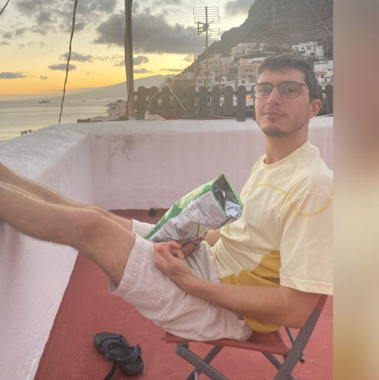

I am a physicist by training who progressively drifted toward life sciences. I obtained a bachelor’s degree in physics (cum laude) in 2013 at Università degli Studi di Torino (Italy), and a joint master’s degree in physics of complex systems (cum laude) in 2015 at Politecnico di Torino (Italy) and Université Paris-Sud (France), for which I was awarded a 1-year fully-funded fellowship as Paris-Saclay International Master’s Scholar at Université Paris-Sud. During my master, I became fascinated with the application of physics-driven formalisms to predict cell behaviour. Driven by this curiosity, I joined José Onuchic, a theoretician working on gene regulation in Rice University’s department of Chemistry, earning a PhD in 2019. During my PhD, I developed mathematical models to explain how the intricate interactions between genes, non-coding RNAs and transcription factors in cancer cells induce epithelial-mesenchymal transition – a well-known driver of metastasis. My PhD research was acknowledged by the 2017 Hoffman fellowship “in recognition of outstanding early achievement toward the Ph.D. degree” and the 2018 Marjory Meyer Hasselman fellowship “in recognition of academic excellence in Chemistry”, which provided independent funding for my PhD scholarship for one year. In 2020, I moved to University of California Irvine (UC Irvine) as an NSF-Simons postdoctoral fellow with Qing Nie, a mathematician with expertise in single cell sequencing-driven computational modelling. In my postdoc, I explored the integration between mathematical modelling and single cell Omics data, developing several data-driven computational methods that investigate gene regulation, single cell trajectory reconstruction, and cell-to-cell communication. In June 2024, I established my independent research group at the Radboud Institute for Molecular Life Science (RIMLS) in Radboud University, Nijmegen, to develop the next generation of integrative computational methods to uncover the molecular mechanisms underlying cell behaviour in development and disease.